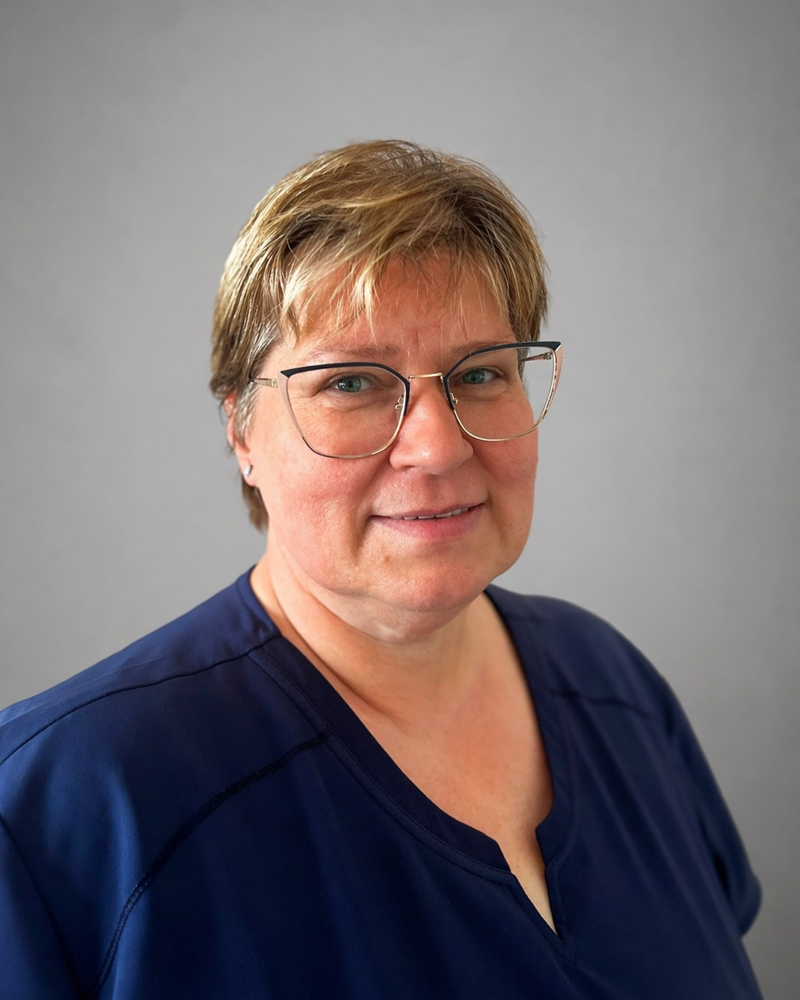
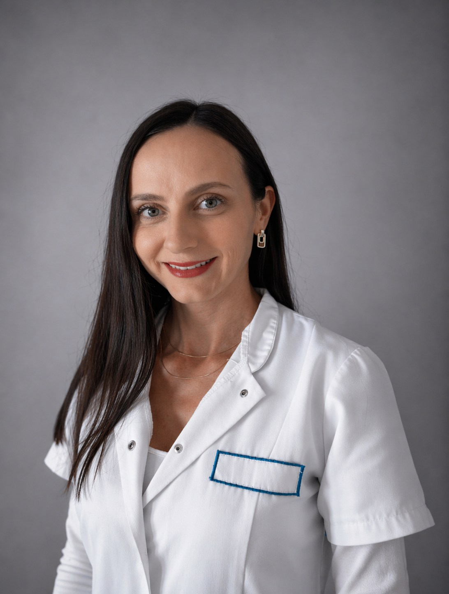
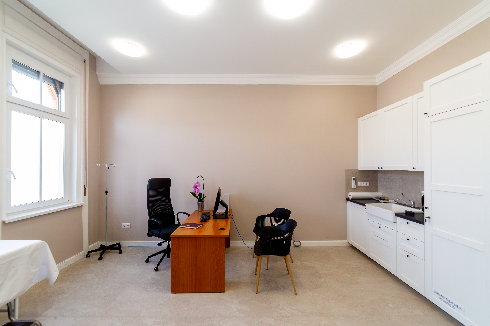
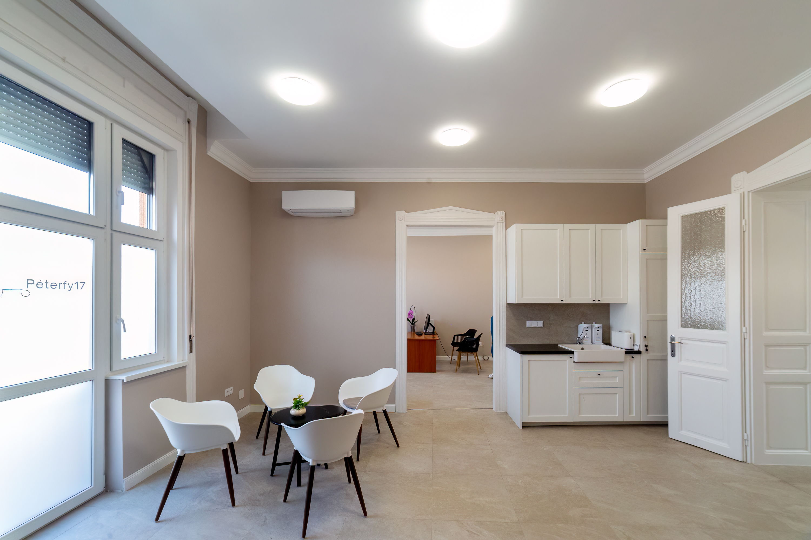
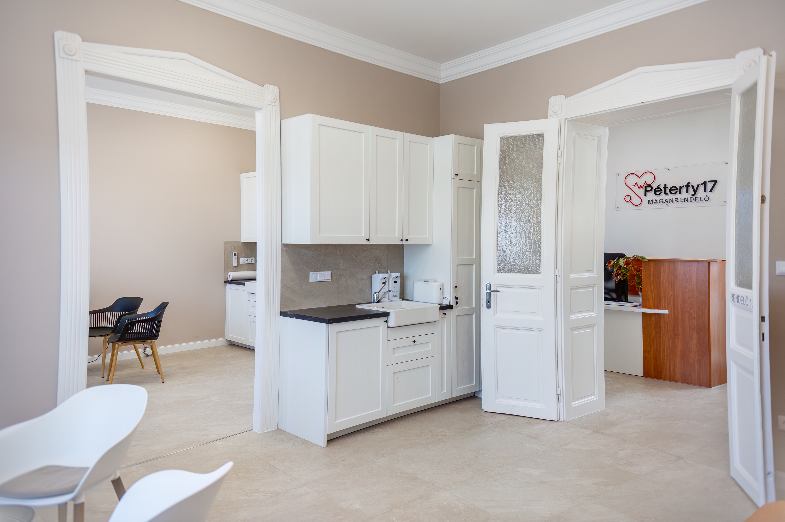
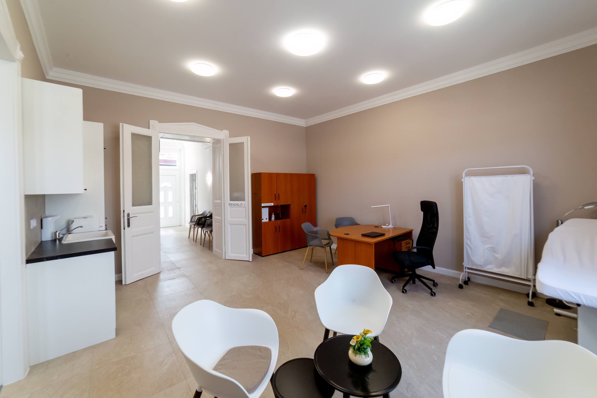
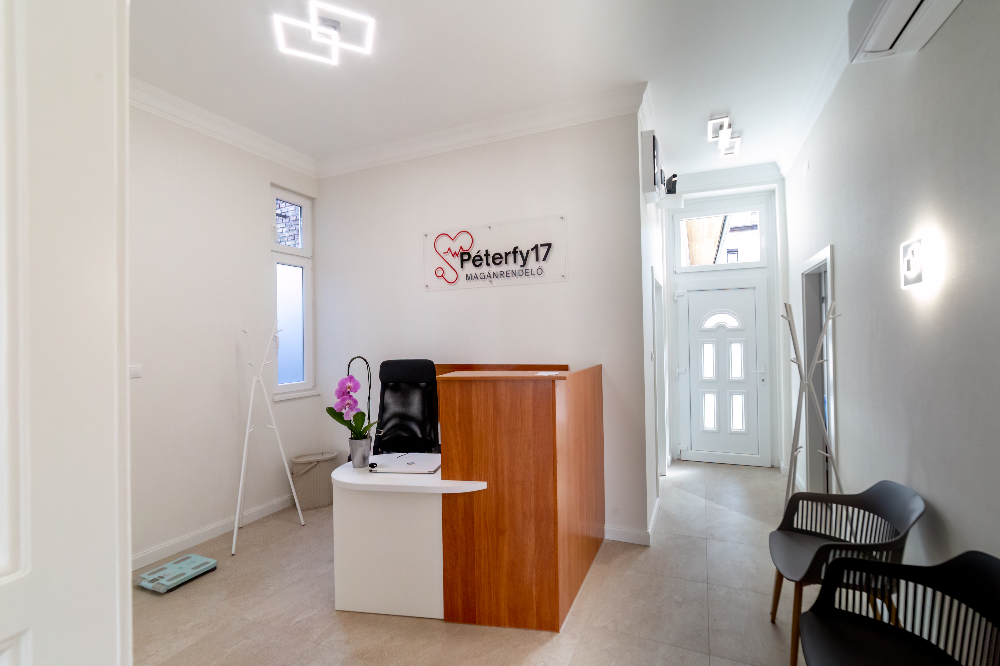
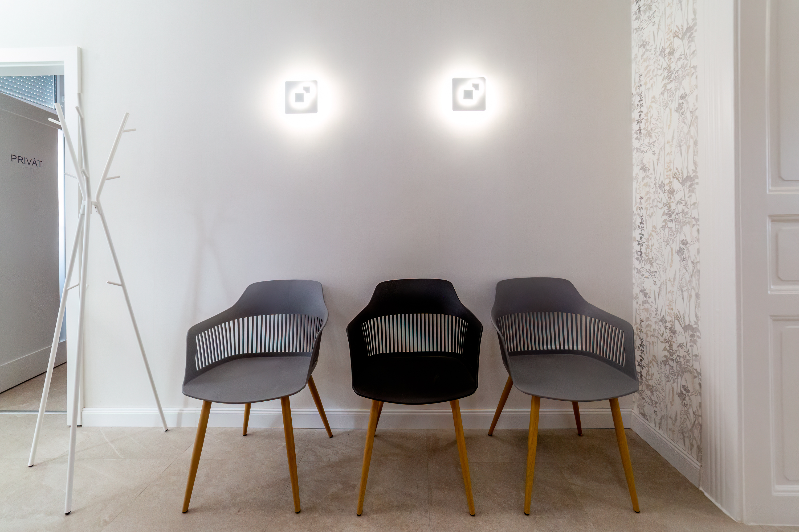

Cukorbetegség kivizsgálása, kezelése és hosszú távú gondozása, CGM-eszközök betanítása.
Ambuláns vérnyomásmérés napi profilhoz, hipertonológiai kivizsgálás és gondozás.
Krónikus vesebetegek szakorvosi gondozása, vesefunkció ellenőrzése és kezelése.
Teljes körű bőrgyógyászati kivizsgálás, bőrbetegségek diagnosztikája és kezelése dermatoszkóppal.
Krónikus sebek, lábszárfekélyek és limfödéma szakszerű kezelése és gondozása.
Pajzsmirigy-alul- és túlműködés, göbök és autoimmun pajzsmirigybetegségek kivizsgálása és kezelése.
Policisztás petefészek szindróma, hormonális elhízás, hyperandrogénia és endokrin meddőség kezelése.
Szorongás, depresszió, kiégés és egyéb pszichiátriai állapotok szakorvosi kivizsgálása és kezelése.
Egyéni pszichoterápia – CBT, sématerápia, autogén tréning – és addiktológiai gondozás.
Tapasztalt és elkötelezett csapatunk minden nap azon dolgozik, hogy a legjobb ellátást nyújtsuk pácienseinknek.
Belgyógyász, diabetológus, nefrológus, hipertonológus
Széles körű klinikai tapasztalattal rendelkező belgyógyász, nefrológus és diabetológus szakorvosként magas színvonalú, személyre szabott ellátást biztosítok. Rendelésemen a részletes kivizsgálás, a komplex szemlélet és a páciensekre fordított kiemelt figyelem alapérték.

Asszisztens
20 éves ápolói tapasztalattal gondoskodom arról, hogy minden páciens biztonságban és jó kezekben érezze magát rendelőnkben. Vérvételtől az asszisztensi feladatokig – minden viziten számíthat rám.
Bőrgyógyász, venerológus, kozmetológus
Bőrgyógyászként több évtizedes tapasztalattal segítem pácienseimet a bőrbetegségek pontos diagnózisában és hatékony kezelésében. Számomra kiemelten fontos a részletes tájékoztatás, az egyéni megközelítés és a nyugodt, bizalomra épülő orvos–beteg kapcsolat.
Belgyógyász, endokrinológus
Belgyógyász és endokrinológus főorvosként jelentős tapasztalattal rendelkezem a pajzsmirigybetegségek, endokrin eredetű meddőség, PCOS és hormonális elhízás komplex kezelésében. Munkám során a korszerű diagnosztika és az egyénre szabott terápia áll a középpontban.
Pszichiáter, pszichoterapeuta, addiktológus
30 éves tapasztalattal kísérem végig pácienseimet szorongás, depresszió, kiégés vagy függőség esetén – biztonságos, empatikus légkörben. Célom, hogy mindenki a saját ütemében találjon vissza belső egyensúlyához.

Asszisztens
Az első hívástól a vizit végéig gondoskodom arról, hogy rendelőnkben minden gördülékenyen és kellemesen menjen. Időpontfoglalásban és minden adminisztrációs kérdésben szívesen segítek.
Rendelőnkben az ellátás előre egyeztetett időpont alapján történik, így minden páciensre elegendő figyelmet tudunk fordítani.
Dr. Ladányi Ágnes
Belgyógyász, diabetológus, nefrológus, hipertonológus+36 70 550 3989
Dr. Széver Krisztina
Bőrgyógyász, venerológus, kozmetológus+36 30 881 8998
Dr. Székely Katalin
Belgyógyász, endokrinológus+36 70 607 8039
Dr. Nagy Mária Magdolna
Pszichiáter, pszichoterapeuta, addiktológus+36 70 550 3989
Modern, jól felszerelt rendelőnkben nyugodt, kellemes környezetben fogadhatjuk pácienseinket.






1076 Budapest, Péterfy Sándor utca 17.
IV. emelet, 29. ajtó
+36 70 550 3989
peterfy17rendelo@gmail.com